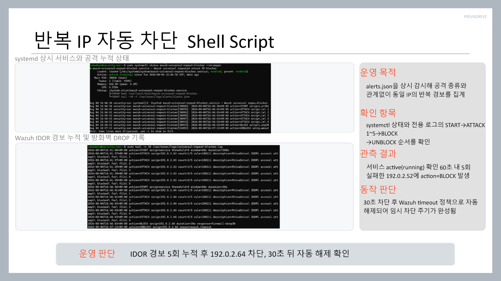

취약점 조치
모의해킹 결과를 보고 취약점이 발생한 조건과 영향을 확인한 뒤, 애플리케이션과 보안 설정에서 어떤 부분을 수정해야 하는지 정리하고 조치 과정에 참여했습니다.
- 공격 결과와 발생 원인 확인
- 코드·설정 보완 내용 정리
- 조치 후 재시험 결과 확인
PROJECT 03 · ENTERPRISE SECURITY ASSESSMENT
공격을 재현하고
탐지·차단·관제까지 확인한
기업 정보보호 진단
기업용 파일 공유 서비스를 대상으로 웹 취약점을 점검하고, pfSense·Suricata·ModSecurity·Wazuh를 연결해 공격이 어디에서 탐지되고 차단되는지 확인했습니다. 저는 모의해킹 결과를 바탕으로 취약점 조치 과정에 참여했고, 팀에서 만든 결과를 발표할 수 있도록 56장 분량의 발표자료 전체를 정리했습니다.
01 / PROJECT
PrivaDrive는 기업 간에 문서와 파일을 주고받는 상황을 가정한 B2B 파일 공유 서비스입니다. 파일 업로드와 다운로드, 사용자 인증, 관리자 격리 구역처럼 공격 표면이 분명한 서비스를 먼저 만들고, 그 위에서 웹 취약점과 악성 파일 유입을 시험했습니다.
강사님 안내서에 따라 계획서를 먼저 제출해 피드백을 받은 뒤 작업을 진행했습니다. 공격 재현만 하고 끝내지 않고 방화벽, IDS/IPS, WAF, 애플리케이션, Wazuh 관제 화면까지 로그가 이어지는지 확인하는 것이 이번 프로젝트의 큰 틀이었습니다.
02 / ARCHITECTURE
Kali Linux 공격 구간은 pfSense와 Suricata를 지나 DMZ의 PrivaDrive 서버로 연결됩니다. 내부 SOC 구간에는 Wazuh Manager·Indexer·Dashboard를 두고, 웹 서버의 Wazuh Agent와 Syslog를 통해 보안 이벤트와 차단 로그를 모았습니다.
포트폴리오에서는 전체 구조를 이해하는 데 필요한 흐름만 정리했습니다. 인프라 구축 자체는 시스템 구축 담당 팀원의 작업이며, 저는 이 환경에서 확인된 모의해킹 결과를 바탕으로 취약점 조치와 발표자료 정리에 참여했습니다.

03 / MY ROLE
모의해킹 결과를 보고 취약점이 발생한 조건과 영향을 확인한 뒤, 애플리케이션과 보안 설정에서 어떤 부분을 수정해야 하는지 정리하고 조치 과정에 참여했습니다.
계획서, 구성도, 모의해킹 결과, 탐지·차단 화면, Wazuh 로그, 악성코드 분석과 쉘 스크립트 결과를 다시 확인해 발표 순서에 맞게 한 파일로 정리했습니다.

04 / STARTING POINT
팀원이 AI를 활용해 만든 초기 초안에는 PrivaDrive의 로그인, 파일 조회·업로드·다운로드 기능과 vulnerable/hardened 모드가 들어 있었습니다. SQL Injection, IDOR, Reflected XSS, Path Traversal, 파일 업로드 같은 항목을 두 모드에서 비교할 수 있도록 만든 구조였습니다.
이 파일은 완성 결과물이 아니라 프로젝트 방향을 잡는 출발점에 가까웠습니다. 이후 팀 작업을 통해 CSRF, 무차별 대입 공격, 악성 파일 분석과 Wazuh 연동 등 필요한 기능과 검증 범위를 추가했습니다. 이 부분은 팀원이 만든 초안이므로 제 개인 구현 성과로 포함하지 않았습니다.
05 / VULNERABILITY RESPONSE
모의해킹 결과보고서에는 7개 웹 공격 항목이 정리되어 있습니다. 저는 결과를 발표자료로 옮길 때 공격 입력값, 실제 영향, 애플리케이션 조치, WAF·Wazuh 확인 결과가 한 화면에서 이어지도록 구성했습니다.
Prepared Statement와 비밀번호 해시 검증을 적용하고 ModSecurity 차단 및 Wazuh 경보를 확인했습니다.
파일 소유자와 현재 사용자를 검증하고, 권한이 없으면 파일 존재 여부도 드러나지 않도록 404로 처리했습니다.
출력 인코딩과 CSP 보안 헤더를 적용하고 WAF의 XSS 패턴 차단 결과를 확인했습니다.
파일 ID 기반 조회와 경로 정규화, 웹 루트 외부 저장을 적용해 상위 경로 접근을 막았습니다.
확장자·MIME 유형을 검사하고 위험 파일은 분석 후 관리자 격리 구역으로 옮기도록 구성했습니다.
세션별 토큰을 생성해 상태 변경 요청에서 검증하고 실패 이벤트를 Wazuh로 전달했습니다.
Suricata와 Wazuh에서 반복 로그인 시도를 탐지했습니다. 계정 잠금과 Rate Limiting은 잔여 보완 항목으로 남겼습니다.

06 / SHELL SCRIPT
추가 제출물로 작성한 쉘 스크립트는 Wazuh의 alerts.json을 계속 확인하면서 출발지 IP별 공격 경보를 집계합니다. 공격 종류가 달라도 공격·IDS·ModSecurity 관련 그룹이고 경보 수준이 8 이상이면 같은 IP의 기록으로 묶습니다.
기준을 넘으면 Wazuh의 방화벽 차단 명령을 호출하고, 30초가 지나면 자동 해제 이력을 남깁니다. 점검용 스크립트에서는 Wazuh Manager, 감시 서비스, 자동 시작 설정, BLOCK·UNBLOCK 로그가 모두 정상인지 한 번에 확인했습니다.


07 / MALWARE RESPONSE
테스트 파일은 실제 피해를 일으키는 악성코드가 아니라 탐지와 자동 대응을 검증하기 위해 위험 패턴을 넣은 샘플입니다. ClamAV, YARA, capa, oletools를 조합해 파일 유형과 내부 행위를 분석했습니다.
검증 사례에서는 EICAR 시그니처와 capa 기능 패턴을 확인해 위험도 95점, MALICIOUS로 판정했습니다. 이후 사용자 영역에서 파일을 제거하고 관리자 격리 구역으로 이동했으며, 사건 번호와 분석 로그를 Wazuh로 전송했습니다.


08 / PRESENTATION
발표자료는 제가 처음부터 끝까지 작성했습니다. 계획서의 목표와 일정에서 시작해 기업 인프라 구성, 7개 취약점 공격·조치, 탐지·차단 결과, Wazuh 로그 분석, 악성파일 자동 대응과 쉘 스크립트 검증까지 순서를 다시 잡았습니다.
화면을 단순히 붙여 넣기보다 각 장면에서 무엇을 시도했고, 어떤 계층에서 막혔으며, 관제 로그가 어떻게 남았는지를 짧게 읽을 수 있도록 설명을 붙였습니다. 프로젝트 기술 구현은 팀 협업 결과이고, 그 내용을 한 흐름으로 설명할 수 있게 만든 발표자료가 제가 가장 분명하게 맡은 산출물입니다.

프로젝트 전체 과정과 검증 화면을 발표 순서에 맞게 직접 구성한 자료입니다.
PPTX 원본 열기 ↗09 / DEMO VIDEO
발표자료에 사용한 시연 영상은 팀원이 제작했습니다. PrivaDrive 화면에서 주요 기능과 보안 대응 결과를 실제 실행 화면으로 보여주기 위한 영상이며, 발표 중에는 정적인 캡처만으로 전달하기 어려운 시스템 동작을 보완하는 자료로 활용했습니다.
10 / DELIVERABLES
안내서에서 요구한 구성도와 세 종류의 결과보고서, 추가 제출물인 자동 차단 쉘 스크립트, 발표자료를 정리했습니다.
11 / REVIEW
3차에서는 앞선 프로젝트에서 다뤘던 네트워크, 웹 취약점, 시스템 점검이 하나의 환경 안에서 연결됐습니다. 같은 공격이라도 애플리케이션 코드, WAF, IDS, 관제 화면에서 보이는 정보가 달라서 결과를 한 번에 설명하려면 전체 흐름을 이해해야 했습니다.
발표자료를 만들면서 팀원들이 각각 맡아 만든 결과를 다시 확인하게 됐고, 화면과 로그만 나열해서는 전달이 어렵다는 점도 느꼈습니다. 공격 조건, 조치 내용, 재시험 결과를 같은 순서로 맞추는 데 가장 많은 시간을 썼습니다.
{kind=link}